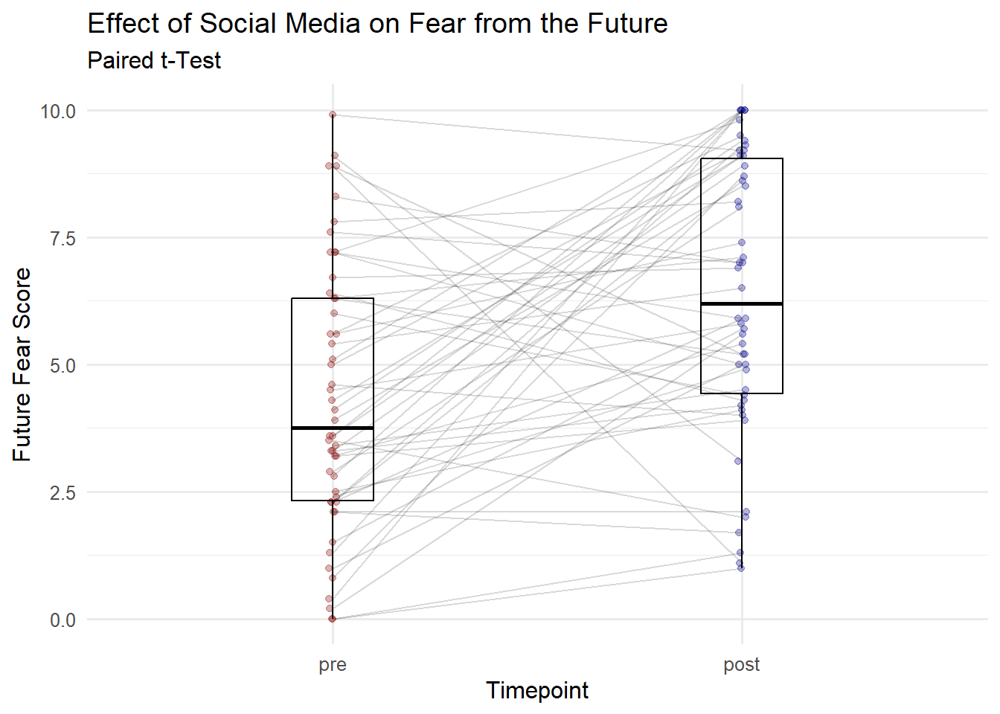

Mit t-Tests für abhängige Stichproben wird untersucht, wie sich zwei verbundene Gruppen in einem intervallskalierten Mass unterscheiden.
Abhängige/verbundene Stichproben bedeutet hierbei, dass die Daten einer Person zu zwei Messzeitpunkten (in zwei Bedingungen) erhoben werden. Verbunden kann ebenfalls bedeuten, dass die Daten zweier Personen erhoben werden, die nicht unabhängig voneinander sind (z.B. Paare, Geschwister, Kontrollpersonen etc.).
Abhängigkeit/Verbundenheit kann entstehen durch: - Messwiederholung - Natürliche Paare - Parallelisierung der Stichproben
Typische Fragestellungen:
Wie unterscheidet sich Symptomausprägung Y einer Person vor und nach einem Treatment X?
Wie unterscheidet sich Partner:in A von Partner:in B in der Fähigkeit Y?
Wie unterscheidet sich das Verhalten einer Person in Situation A von dem in Situation B?
10.2 Voraussetzungen
Voraussetzungen t-Test für abhängige Stichproben, Überprüfung und mögliche Alternativen bei Verletzung der Annahmen
Voraussetzung
Beschreibung
Vorgehen bei Verletzung
Abhängige Variable
Eine abhängige Variable mit metrischem Skalenniveau. Die Differenzvariable (gemessener Unterschied zwischen jedem Paar) muss in der Population normalverteilt sein (bei genügend grosser Stichprobe ist der t-Test robust).
Transformieren der Variable oder Verwenden von non-parametrischen Verfahren: Der Wilcoxon-Vorzeichen-Rangtest kann verwendet werden, wenn der Mittelwert nicht zur Bestimmung der zentralen Tendenz verwendet werden kann. Man greift auf dieses Verfahren u.a. auch dann zurück, wenn die Stichprobe zu klein ist, um von der Robustheit des t-Tests ausgehen zu können.
Unabhängige Variable
Eine unabhängige Variable mit zwei Stufen (dichotome Gruppenvariable).
Verwenden eines anderen statistischen Verfahrens (z.B. Regression) oder Dichotomisierung der UV mittels Mediansplit (z.B. Alter von Zahl zu “jung” und “alt”).
Unabhängigkeit der Messwerte
Die Messwerte innerhalb der beiden Stichproben sind voneinander unabhängig. Es handelt sich um einfache, innerhalb der Stichprobe voneinander unabhängigen, Zufallsstichproben.
Abhängigkeit der Gruppen/Stichproben
Die Messwerte zwischen den beiden Stichproben sind verbunden (abhängige Gruppen).
1. Statistische Hypothesen und Signifikanzniveau festlegen
Ungerichtete Hypothesen:
\(H_0\): Die Populationsmittelwerte unterscheiden sich nicht (d.h. haben eine Differenz gleich 0) \(\mu_1 = \mu_2\) oder \(\mu_D = 0\)
\(H_1\): Die Populationsmittelwerte unterscheiden sich (d.h. haben eine Differenz ungleich 0) \(\mu_1 \neq \mu_2\) oder \(\mu_D \neq 0\)
Gerichtete Hypothesen:
Hypothesen können auch gerichtet formuliert werden (die Populationsmittelwerte sind grösser/kleiner in einer Gruppe):
\(H_0\): Der Mittelwert der Gruppe 1 ist kleiner oder gleich gross wie der Mittelwert der Gruppe 2 \(\quad \mu_1 \leq \mu_2\)
\(H_1\): Der Mittelwert der Gruppe 1 ist grösser als der Mittelwert der Gruppe 2 \(\quad \mu_1 > \mu_2\).
oder
\(H_0\): Der Mittelwert der Gruppe 1 ist grösser oder gleich gross wie der Mittelwert der Gruppe 2 \(\quad \mu_1 \geq \mu_2\)
\(H_1\): Der Mittelwert der Gruppe 1 ist kleiner als der Mittelwert der Gruppe 2 \(\quad \mu_1 < \mu_2\).
Signifikanzniveau:
Wird ein Signifikanzniveau von \(\alpha = 0.05\) festgelegt, bedeutet dies, dass bei der Verwerfung der Nullhypothese eine 5% Wahrscheinlichkeit besteht, dass eigentlich kein Unterschied besteht und irrtümlicherweise einer angenommen wurde.
2. A-priori Poweranalyse durchführen
Vor der Datenerhebung soll eine a-priori Poweranalyse durchgeführt werden. Einerseits kann damit ermittelt werden, wie viel Power (Teststärke) der Test hat, um einen Effekt von vordefinierter Grösse (z.B. einen grossen Effekt von \(d=0.8\)) zu entdecken. Andererseits kann berechnet werden, wie gross die Stichprobe sein sollte, um einen Effekt bestimmter Grösse und eine festgelegte Teststärke zu erreichen.
10.3.2 Vorverarbeitung
3. Daten einlesen, vorverarbeiten und visualisieren
Zuerst müssen die Daten eingelesen und bereinigt werden. Daten können diagnostisch visualisiert werden, um z.B. fehlende Werte zu entdecken oder Verteilungen der Daten visuell beurteilen und Extremwerte zu identifizieren.
Für den t-Test werden die Daten hier in einem wide-Format benötigt. Für die Visualisierung wird eine Datensatz im long-Format benötigt.
4. Voraussetzungen überprüfen
Normalverteilung der Differenzen
Ob die Differenzen der Messwerte approximativ normalverteilt sind, kann z.B. visuell mit einem Plot oder dem Shapiro-Wilk-Test überprüft werden.
10.3.3 Analyse
5. Deskriptivstatistik und Visualisierung
Bei Gruppenunterschieden wird für jede Gruppe ein Lagemass (z.B. Mittelwert oder Median) sowie ein Streumass (z.B. Standardabweichung, Standardfehler, Konfidenzintervall) berechnet. Das Lagemass stellt die durchschnittliche Merkmalsausprägung in den beiden Gruppen dar. Das Streumass zeigt den Streubereich der Daten auf.
Zur Visualisierung von Gruppenunterschieden eignen sich Lagemasse mit Fehlerbalken. Boxplots eignen sich beispielsweise gut, um Grösse des Gruppenunterschiedes (Effekts) und die Kohärenz der Datenpunkte (Ähnlichkeit der Werte innerhalb einer Bedingung/Gruppe) zu beurteilen.
Durch die Visualisierung der Rohwerte, kann die Verteilung der Messungen gut eingeschätzt werden und Extremwerte werden deutlich sichtbar. Bei zu vielen Datenpunkten führt das Visualisieren der Rohwerte zu unübersichtlichen Grafiken.
6. Teststatistik berechnen
Um zu überprüfen, ob die beiden Mittelwerte signifikant unterschiedlich sind, muss die Teststatistik berechnet werden. Die Verteilung der Teststatistik folgt einer sogenannten t-Verteilung, die durch die Anzahl Freiheitsgrade (df) definiert ist.
Der t-Test für abhängige Stichproben wird über die Differenz der Messwertpaare (intraindividuelle Differenzwerte) ermittelt.
Dazu werden zuerst die Differenzen aller Mittelwertspaare gebildet: \(d_m=x_{m_1}-x_{m_2}\)
Daraus wird der Mittelwert und die Standardabweichung der Differenz berechnet, wobei \(n\) der Anzahl der Messwertpaare entspricht:
Die Freiheitsgrad lassen sich für einen abhängigen t-Test berechnen durch: \(df=n-1\)
Nun muss die berechnete empirische Prüfgrösse t auf Signifikanz überprüft werden. Dazu wird der Wert mit dem kritischen Wert der durch die Freiheitsgrade bestimmten t-Verteilung verglichen. Der kritische Wert kann in einer Tabelle abgelesen werden.
Die \(H_0\) wird beibehalten, wenn die empirische Prüfgrösse kleiner als der kritische Wert ist. Die Gruppen unterscheiden sich nicht signifikant bzw. die Gruppenvariable hat keinen Einfluss auf die AV.
Die \(H_0\) wird abgelehnt, wenn die empirische Prüfgrösse grösser als der kritische Wert ist. Die Gruppen unterscheiden sich signifikant bzw. die Gruppenvariable hat einen Einfluss auf die AV.
7. Effektstärke
Die Effektgrösse beim t-Test für abhängige Stichproben sagt etwas darüber aus, wie gross der Unterschied zwischen den beiden Populationsmittelwerten ist.
Die standardisierte Effektgrösse kann folgendermassen berechnet werden:
\(d=\frac{\overline{x}_D}{\hat\sigma_{D}}\)
Die Konventionen nach Cohen (1988) lauten hier:
\(|d|=\approx 0.14\): kleiner Effekt
\(|d|=\approx 0.35\): mittelgrosser Effekt
\(|d|=\approx 0.57\): grosser Effekt
10.3.4 Schlussfolgerungen
8. Ergebnisse interpretieren und berichten
Je grösser der empirische t-Wert ist, desto stärker spricht dies gegen die Nullhypothese.
Meistens werden in psychologischen Publikationen die Stichprobenmittelwerte und ihre geschätzten Populationsstandardabweichungen (Stichprobenstandardabweichungen) sowie die t-Statistik, ihre Freiheitsgrade und der p-Wert (also der Wahrscheinlichkeit dieses oder eines noch extremeren t-Wertes unter Annahme der Nullhypothese) berichtet.
Falls der exakte p-Wert sehr klein ist, beispielsweise \(p=0.00000012\) bzw. kleiner als \(0.001\), wird dies folgendermassen notiert: \(p < .001\).2
Die kognitive Leistung von Personen vor und nach dem Treatment X unterscheidet sich nicht signifikant, t(15) = 0.75, p = .47.
10.4 Anwendungsbeispiel in R
Beispiel: Social Media Experiment
In einem Experiment wurden 50 Versuchspersonen vor und nach dem Scrollen und Lesen von Nachrichten auf einer Social Media Plattform befragt, wie stark sie Zukunftsängste empfinden. Die Zukunftsangst wurde zu Messzeitpunkt 1 (kurz vor dem Lesen/Scrollen) und zu Messzeitpunkt 2 (kurz nach dem Lesen/Scrollen) gemessen. Hierfür gaben die Versuchspersonen mit einem digitalen Schieber auf einer durchgehenden Skala von 0 bis 10 an, wie stark ihnen die Zukunft Angst macht.
Die unabhängige Variable war der Messzeitpunkt (dichotom): vorher (pre) und nachher (post).
Die abhängige Variable war das Rating der Zukunftsangst.
10.4.1 Planung
1. Statistische Hypothesen und Signifikanzniveau festlegen
\(H_0\): Die Stimmung hat keinen Einfluss auf die Leistung: \(\mu_1=\mu_2\)
\(H_1\): Die Stimmung hat einen Einfluss auf die Leistung: \(\mu_1 \neq\mu_2\)
Das Alphaniveau wird auf \(5 \%\) festgelegt. Da es sich um eine ungerichtete Hypothese handelt, wird zweiseitig getestet.
2. A-priori Poweranalyse durchführen
n: Anzahl Paare
d: Effektgrösse
sig.level: \(\alpha\) (Fehler 1. Art)
alternative: \(H_1\) gerichtet (greateroder less) oder ungerichtet (two-sided)
Paired t test power calculation
n = 50
delta = 0.57
sd = 1
sig.level = 0.05
power = 0.9767248
alternative = two.sided
NOTE: n is number of *pairs*, sd is std.dev. of *differences* within pairs
# Stichprobengrösse berechnenpwr.t.test(d =0.35, power =0.8, sig.level =0.05, type ="paired",alternative ="two.sided")
Paired t test power calculation
n = 66.01882
d = 0.35
sig.level = 0.05
power = 0.8
alternative = two.sided
NOTE: n is number of *pairs*
Eine Teststärke (Power) von 0.98 bedeutet, dass die Wahrscheinlichkeit 98% beträgt, einen tatsächlich vorhandenen Effekt mit einer Effektstärke von 0.57 zu finden.
Um mit einer Teststärke von 80% einen mittelgrossen Effekt von \(d=0.35\) zu finden, wird eine Stichprobe von mindestens \(n=67\) Personen benötigt.
Hier kann der Projektordner mit den Daten heruntergeladen werden. Vor dem ersten Verwenden muss der Ordner entzippt werden, dann kann das RProject namens ttests.Rproj geöffnet werden. Der Ordner enthält
RProject namens ttest.Rproj
Datensatz fear.csv in data-Ordner
RNotebook namens dependent_ttest.Rmd
(die weiteren Dateien werden für den t-Test für unabhängige Stichproben und die Übung 4 verwendet.)
# Package ladenlibrary(tidyverse)# Daten laden und anschauend_fear <-read.csv("data/fear.csv") |>glimpse()
Für den t-Test werden die Daten in einem long Format benötigt. Daher müssen die Daten vom bisherigen wide Format in ein long Format umstrukturiert werden, Die Variable id wird mit as.factor() in einen Faktor konvertiert.
# Datenformat für Deskriptivstatistik und Visualisierung# von wide zu long transformierend_fear_long <- d_fear |>pivot_longer(cols =c(fear_pre, fear_post),names_to ="timepoint",names_prefix ="fear_", values_to ="fear") |>select(id, timepoint, fear)# id (Subjekt-ID) und t (Gruppenvariable) als Faktor definierend_fear_long <- d_fear_long |>mutate(id =as.factor(id)) |>mutate(timepoint =factor(timepoint, levels =c("pre", "post")))# Datensatz anzeigend_fear_long
# A tibble: 100 × 3
id timepoint fear
<fct> <fct> <dbl>
1 1 pre 5.1
2 1 post 10
3 2 pre 6.3
4 2 post 7.1
5 3 pre 2.3
6 3 post 9.3
7 4 pre 3.3
8 4 post 8.9
9 5 pre 8.3
10 5 post 7
# ℹ 90 more rows
4. Voraussetzungen überprüfen
Der t-Test setzt voraus, dass die Differenzen der Messungen in beiden Gruppen normalverteilt sind.
10.4.3 Analyse
5. Deskriptivstatisik und Visualisierung
Für die deskriptive Statistik können die Daten nach Bedingung gruppiert und dann die Kennwerte berechnet werden.
# Nach condition gruppieren und performance zusammenfassend_summary <- d_fear_long |>group_by(timepoint) |>summarise(mean_fear =mean(fear),sd_fear =sd(fear))d_summary
# A tibble: 2 × 3
timepoint mean_fear sd_fear
<fct> <dbl> <dbl>
1 pre 4.32 2.62
2 post 6.38 2.72
Mit einem Boxplot kann die Verteilung der Werte angeschaut und die beiden Gruppen visuell miteinander verglichen werden.
# Boxplotp_boxplot <- d_fear_long |>ggplot(aes(x = timepoint, y = fear)) +geom_jitter(aes(colour = timepoint), alpha =0.3, height =0, width =0.01) +geom_line(aes(x = timepoint, y = fear, group = id), alpha =0.15) +geom_boxplot(alpha =0, width =0.2, color ="black") +scale_colour_manual(values =c("pre"="red4","post"="blue4")) +labs(title ="Effect of Social Media on Fear from the Future",subtitle ="Paired t-Test",x ="Timepoint",y ="Future Fear Score") +theme_minimal(base_size =12) +theme(legend.position ="none")p_boxplot

6. Teststatistik berechnen
Berechnung Teststatistik in R mit der Funktion t.test
Der t-Test für abhängige Stichproben kann mit der Funktion t.test() durchgeführt werden. Hierbei wird ein Datensatz im wide-Format benötigt.
y: Abhängige Variable (metrisch)
x: Unabhängige Variable (Bedingung oder Gruppenvariable)
alternative: festlegen, ob die \(H_1\) gerichtet (greateroder less) oder ungerichtet (two-sided) ist
var.equal: festlegen, ob die Annahme homogener Varianzen zutrifft (TRUE) oder nicht (FALSE)
# t-Test für unabhängige Stichproben durchführent.test(x = d_fear$fear_post, # av t2y = d_fear$fear_pre, # av t1alternative ="two.sided",paired =TRUE)
Paired t-test
data: d_fear$fear_post and d_fear$fear_pre
t = 3.9751, df = 49, p-value = 0.000231
alternative hypothesis: true mean difference is not equal to 0
95 percent confidence interval:
1.017604 3.098396
sample estimates:
mean difference
2.058
Die Mittelwerte zwischen den beiden Messzeitpunkten unterscheiden sich signifikant auf dem \(5 \%\)-Niveau. Die Nullhypothese, wonach sich die beiden Mittelwerte nicht unterscheiden kann verworfen werden. Das Lesen/Scrollen durch Social Media Posts beeinflusst somit die empfundene Zukunftsangst.
7. Effektstärke bestimmen
Berechnung der Effektgrösse (Cohen’s d)
Nun kann noch die Effektgrösse mit cohen.d(formula = y ~ x, data) aus dem Package {effsize} berechnet werden.
# Effektgrösse berechneneffsize::cohen.d(d_fear$fear_post, # av t2 d_fear$fear_pre, # av t1paired =TRUE)
Cohen's d
d estimate: 0.7699901 (medium)
95 percent confidence interval:
lower upper
0.332312 1.207668
Die Effektgrösse liegt bei \(d = 0.77\). Es handelt sich nach der Taxonomie von Cohen (1988) um einen grossen Effekt.
10.4.4 Schlussfolgerungen
8. Ergebnisse interpretieren und berichten
Das Ergebnis ist auf dem \(5 \%\)-Niveau signifikant und die Nullhypothese kann somit verworfen werden: Die Stimmung beeinflusst die kognitive Leistungsfähigkeit. Es handelt sich nach der Taxonomie von Cohen (1988) um einen grossen Effekt (\(d = 0.77\)).
“We examined whether doom-scrolling on social media has an effect on the immediate experience of fear of the future. There was a significant difference between pre and post measurement, t(49) = 3.98, p < .001, d = 0.77). Participants reported significantly higher fear of the future after reading/scrolling through social media posts (M = 6.38, SD = 2.72) compared to before (M = 4.32, SD = 2.62). This indicates a large effect of social media on experiences of fear of the future according to Cohen’s convention (1988).”
Eid, M., Gollwitzer, M., & Schmitt, M. (2017). Statistik und Forschungsmethoden: Mit Online-Materialien (5., korrigierte Auflage). Beltz. S. 374↩︎